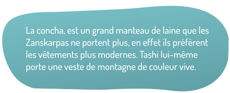
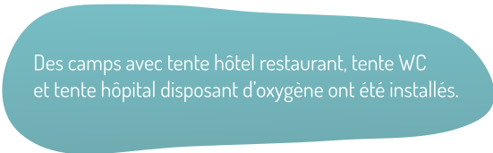
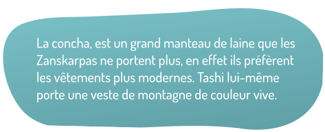
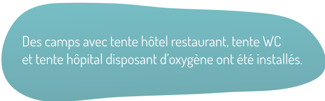

1

0%
Chargement du récit...
0%
Chargement du récit...
 



1
“Je suis surtout voyageur”
Notre premier séjour au Zanskar date de 1989.
Aujourd’hui, à l’orée de mes 70 ans, conscient que c’est
peut-être la dernière fois, j’ai
décidé
de
refaire ce périple.

“Notre seul chemin possible
est de traverser le fleuve gelé”
En hiver, pendant huit mois, le Zanskar est coupé du monde.
L’unique
route permettant d’atteindre les villages est impraticable.
Appelée Chadar lorsqu’elle est gelée, elle est accessible
durant les mois
les plus froids, en janvier et février.
“À l’orée de mes 70 ans,
j’ai décidé de refaire ce périple”
À l’aéroport de Leh, Tashi et son fils Lundup attendent de pied
ferme.
Pour cet ultime voyage, mon hésitation est grande.
Faire cette traversée avec mes amis Zanskarpas,
ou
relever un
objectif personnel, de rejoindre, seul, la vallée du Zanskar.
Et vous,
quel choix feriez vous
?
“De nombreuses agences indiennes présentent ce trek
comme étant
l’aventure à vivre absolument.
Résultat : plusieurs morts l’an dernier”
Il nous est impossible de parcourir la vallée sans être accompagnés.
Après
les quelques jours d’acclimatation obligatoire, nous devons
respecter les règles imposées par le
gouvernement indien. Ces règles
limitent les accidents, de plus en plus nombreux. Depuis
quelques
années, la Chadar est très fréquentée par des Indiens peu entraînés à la
marche pour cet
environnement
si changeant, si hasardeux et si
dangereux ! Les agences indiennes présentent ce trek comme
étant
l’aventure à vivre absolument. Résultat, plusieurs morts l’an dernier par
ignorance et mauvaise
préparation. L’altitude ne pardonne pas.
Par prudence, nous prendrons donc la route avec Tashi et
Lundup.
“Je ressens une très forte émotion en reconnaissant le visage et le
sourire de Tashi”
Mais, pendant deux secondes, en apercevant Lundup qui avait 6 ans
lors
de
mon dernier séjour, mon esprit bascule vingt-cinq ans en
arrière, il ressemble tellement à son père
!
Nous tombons dans leurs bras avec la même complicité qu’autrefois.
“Après les quelques jours
d’acclimatation obligatoire
à
Leh, nous
voilà sur la Chadar”
Il y a 25 ans, nous étions accompagnés d’un guide.
Aujourd’hui, Tashi
est
notre guide. Six porteurs font le
voyage avec nous. Ils sont agiles, adroits, résistants
et
courageux et
n’hésitent pas à nous venir en aide
malgré les tentes et affaires qu’ils transportent.
“La glace sur laquelle nous marchons est très fragile”
Mais aujourd’hui la glace a cédé sous mon poids, et je suis tombé
dans
l’eau jusqu’aux cuisses.
Pourrais-je m’en sortir seul ou est-il judicieux de demander de
l’aide
à mon
ami Tashi, bien plus entrainé pour ces situations délicates ?
“Je me trouve dans
une situation dangereuse”
Se déplacer sur l’eau gelée demande une concentration constante.
Avec
un
environnement si hasardeux, les chutes sont fréquentes.
Je tente de me sortir seul de cette
situation,
mais l’eau glaciale et les
parois glacées ne me le permettent pas.
Sans aide, je me trouve
dans une
situation dangereuse.
“Tashi en voulant me retenir a subi le même sort”
L’aide de nos compagnons de voyage m’est précieuse.
Malheureusement,
Tashi,
en voulant me retenir, a subi
le même sort. Nous avons eu très peur. Les porteurs,
agiles dans
ces
circonstances, nous ont aidé à sortir de
l’eau. Et, David, mon fils, s’est empressé de nous sécher.
“Parfois aucun passage n’est possible à
moins d’escalader les
pentes à pic
et glissantes de la montagne.”
Ces escalades scabreuses nous paraissent encore plus dangereuses
que
la
progression sur la glace. Au moindre faux pas c’est la chute mortelle.

“Nous cherchions des
grottes pour passer la nuit.
Des
nuits à la
belle étoile.”
Au cours de la journée, la glace devient de moins en moins
praticable
en
raison des nombreux passages. Pour cette raison,
nous nous arrêtons l’après-midi. Moment idéal pour
profiter de ce
qui nous entoure. Je me rappelle, il y a 25 ans de cela, nous
cherchions des
grottes pour
passer la nuit. Des nuits à la belle
étoile réchauffée au feu de camp. De beaux souvenirs.
Aujourd’hui
tentes et réchaud nous suivent.
Mais pour mon ultime voyage sur la Chadar, la nostalgie
m’emporte, devrait-on chercher une grotte ou profiter du confort
des tentes ?
“L’environnement est différent de
ce que j’ai connu il y a
25
ans.”
L’afflux de voyageur ne nous permet plus de trouver des grottes
aussi
facilement. Le bois se fait de plus en plus rare. Malgré moi,
les tentes représentent un confort
indéniable pour notre voyage.
“Lundup, le fils de Tashi, nous a préparé une
expédition avec
nuits sous tente et cuisinier.”
Alors pour nous aujourd’hui, plus de nuits inconfortables dans les
grottes,
ni de tsampa la farine d’orge grillée à tous les repas.
Lundup, le fils de Tashi,
nous a
préparé une expédition avec nuits sous
tente et cuisinier. Les porteurs nous rejoignent pour
installer
le
campement, 3 tentes et un espace cuisine. Une cuisine digne d’un 3*
, et des repas à base de
poulet,
riz, lentilles et épices. Bien loin des soupes
réchauffées au feu de camp.
“Il nous accompagnait l’été 1990 pour sortir
du Zanskar, par
les
cols.”
Au détour d’un escarpement rocheux, nous croisons un vieil homme solitaire
vêtu d’une
concha usagée et tirant son traîneau sur la glace. « C’est Stobdan » me dit David !
Quelle
rencontre improbable ! Je ne l’avais pas reconnu, et pourtant il nous accompagnait
l’été 1990 pour
sortir du Zanskar par les cols.
“C’est là que s’arrête notre périple sur glace.”
Deux jeeps nous attendent pour rejoindre le village de Pishu en empruntant
une
piste nouvellement construite à coup de dyna- mite et d’efforts éprouvants. Cette
piste
étroite
et dangereuse, la Zanskar Valley Road, est en construction depuis des
décennies pour relier Padum,
la
capitale du Zanskar, à Leh, la capitale du Ladakh. Il en
faudra encore autant pour la terminer.